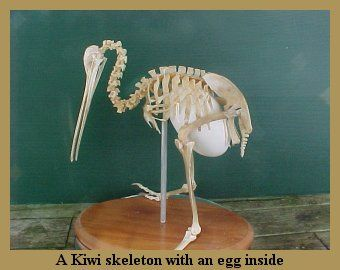

So what are these little creatures?
Kiwi are a significant national icon, equally cherished by all cultures in New Zealand. They are a symbol for the uniqueness of New Zealand wildlife and the value of their natural heritage.
Approximately the size of a domestic chicken, kiwi are the smallest ratites (which also include ostriches, emus, rheas, cassowaries and the extinct elephant birds and moa).
Kiwi are mostly nocturnal. Which means that they come out of their burrows after nightfall to forage for insects, grubs, earthworms, fallen fruit and native plants by probing into the ground with their bill up to a depth of 12cm. It has a well-developed sense of smell and it is the only bird in the world with nostrils at the end of its beak. Big ear openings provide a very good sense of hearing and the long graceful whiskers and sensitive bill help it locate food in the soil and leaf litter.
Kiwi have one of the largest egg-to-body weight ratios of any bird. The egg averages 15% of the female's body weight (compared to 2% for the ostrich). Incubation is done by the male and can take anything from 74-90 days. Chicks hatch fully feathered. Kiwi can live for between 25 and 50 years.
Māori folk tale how kiwi lost its wings: Legend of Kiwi
Some unique traits of kiwi:
- It has tiny wings, but cannot fly.
- It has loose feathers that are more like fur and unlike other birds.
- It has no tail feathers but does have whiskers, like a cat.
- Kiwi chicks are instinctive feeders and are not taught by parent birds to forage for food.
There are five known species of kiwi birds:
- Great spotted kiwi
- Little spotted kiwi
- Okarito brown kiwi
- Southern brown kiwi
- North Island brown kiwi